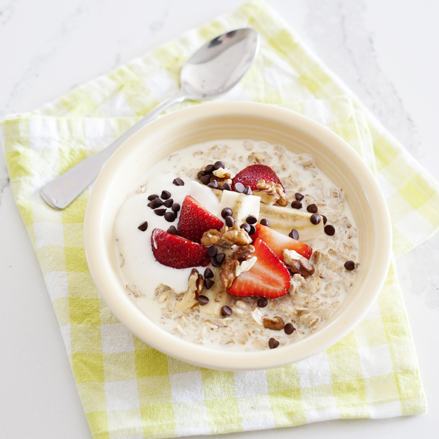

Banana Split Oatmeal

Ingredients:
- 1/3 cup oatmeal(dry, quick-cooking)
- 1/8 teaspoon salt
- 3/4 cup water (very hot)
- 1/2 banana (sliced)
- 1/2 cup frozen yogurt (non-fat)
Directions:
- In a microwave safe cereal bowl, mix together the oatmeal and salt. Stir in water.
- Microwave on high power for 1 minute. Stir. Microwave on high power for another minute. Stir again.
- Microwave an additional 30-60 seconds on high power until the cereal reaches the desired thickness. Stir again.
- Top with banana slices and frozen yogurt.